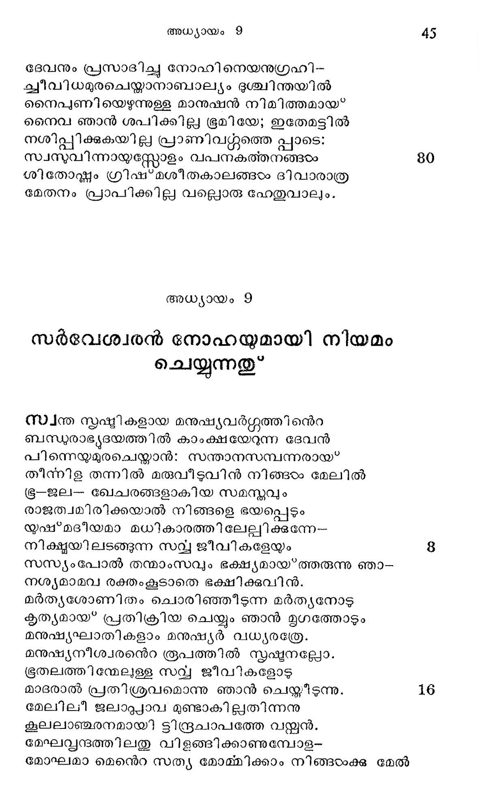
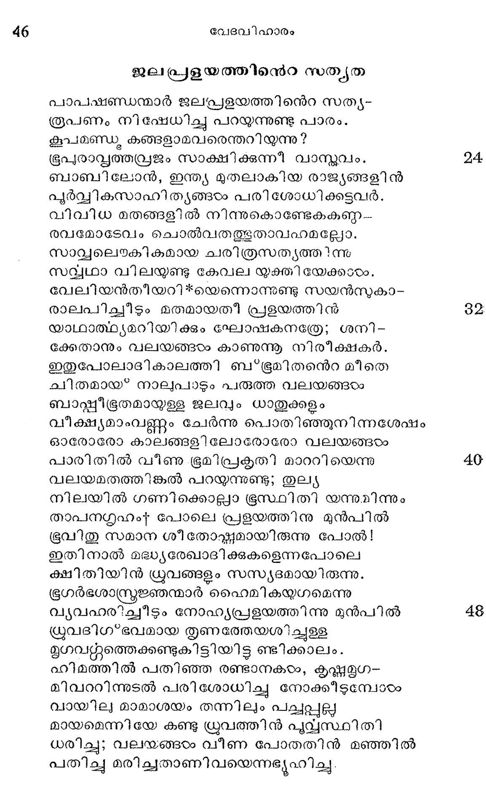
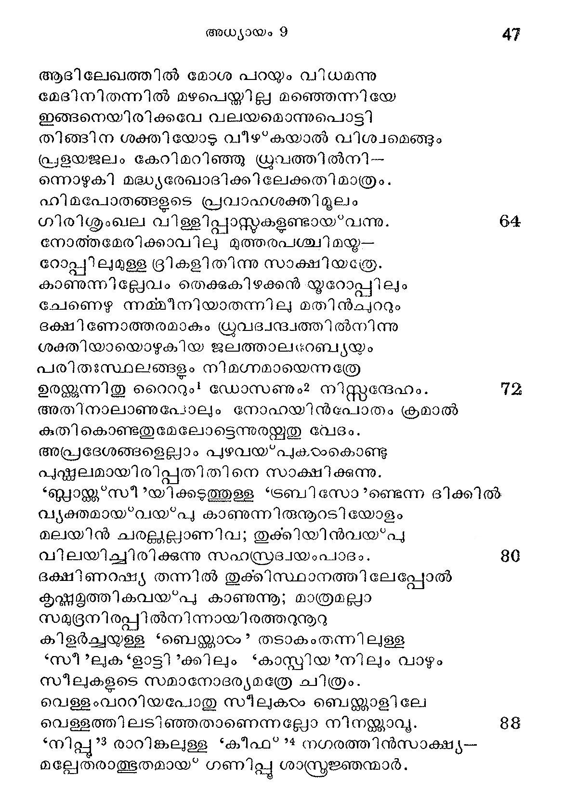
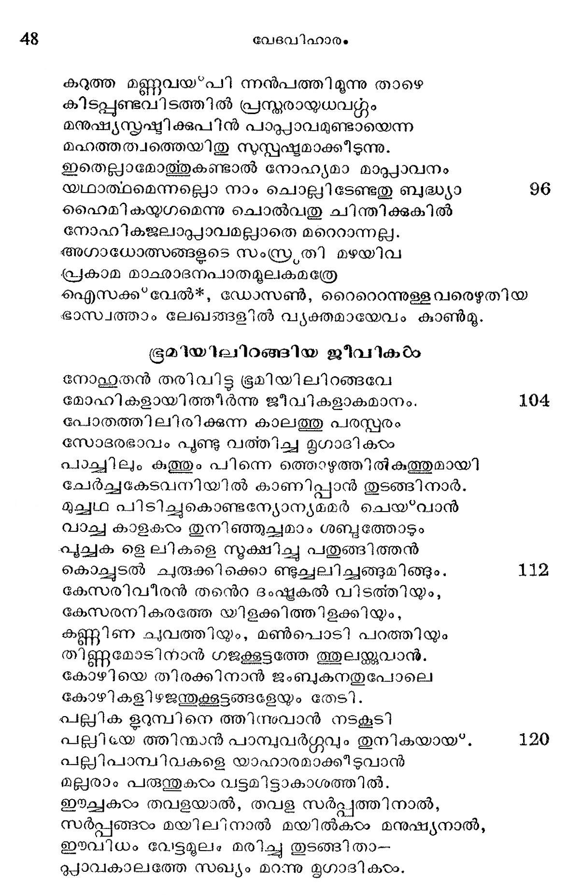
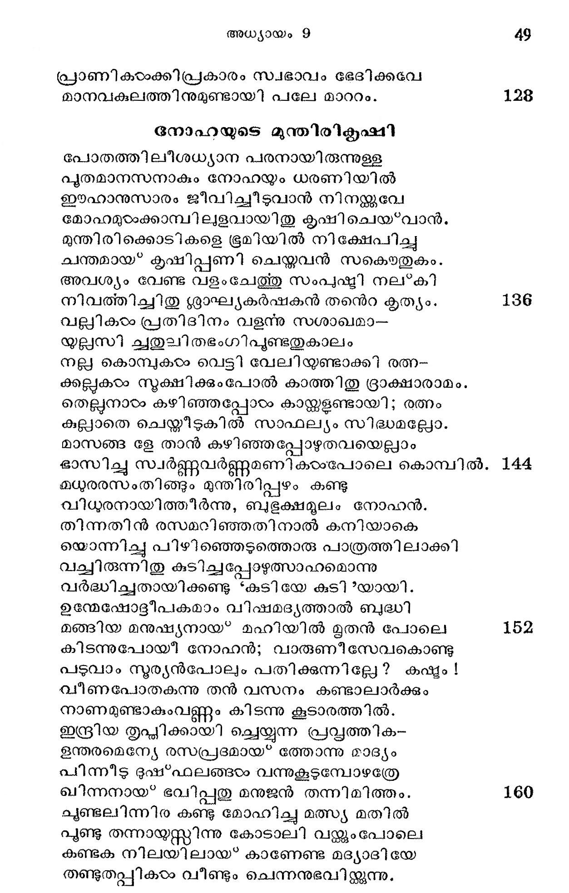
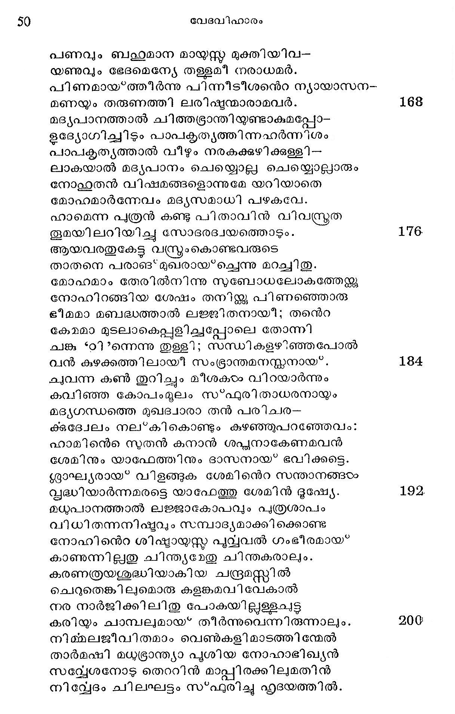
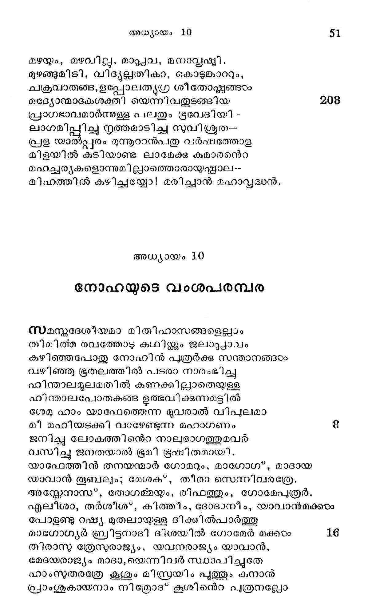

സര്വേശ്വരന് നോഫഹയുമായി നിയമം ചെയ്യുന്നതു്
സ്വന്ത സൃഷ്ടികളായ മനുഷ്യവര്ഗ്ഗത്തിന്െറ
ബന്ധരാഭ്ൃയദയത്തില് കാംക്ഷയേറുനന ദേവന്
പിന്നെയുമുരചെയ്താന്: സന്താനസമ്പന്നരായ?
തീന്നിള തന്നില് മരുവീടുവിന് നിങ്ങഠം മേലിൽ
ഭ-ജല- ഖേചരങ്ങളാകിയ സമസ്തവും
രാജത്വമിരിക്കയാല് നിങ്ങളെ ഭയപ്പെടും
യുഷ്*മദീയമാ മധികാരത്തിലേല്ലിക്കുന്നേ--
നിക്ഷ്ഠധയിലടങ്ങുന്ന സവ്വ ജീവികളേയും
സസ്യരംപോല് തന്മാംസവും ഭക്ഷ്യമായത്തരുന്നു ഞാ-
നശ്യമാമവ രക്തംകൂടാതെ ഭക്ഷിക്കുവിന്.
മര്ത്യശോണിതം ചൊരിഞ്ഞ്ിടുന്ന മര്ത്യനോടു
കൃത്യമായ” പ്രതിക്രിയ ചെയ്യും ഞാന് മൃഗത്തോടും
മനുഷ്യഘാതികളാം മനുഷ്യര് വ്ധ്യരത്രേ.
മനുഷ്യനീശ്വരനന്െറ രൂപത്തില് സ്ൃഷ്ടനല്ലോ.
ഭൂരതലത്തിയ്മേലുള്ള സവ്വയ ജീവികളോടു
മാദരാല് പ്രതിശ്രവമൊന്നു ഞാന് ചെയ്തിടുന്നു.
മേലിലീ ജലാപ്പാവ മുണ്ടാകില്ലതിന്നനു
കൂലലാഞ്ജചരനമായി ട്ടിന്ദ്രചാപത്തേ വയ്ക്കന്.
മേഘവ്വന്ദത്തിലതു വിളങ്ങിക്കാണുമ്പോള-
മോഘമാ മെന്െറ സത്യ മോമ്മിക്കാം നിങ്ങയംക്ക മേൽ

ജലപ്പളയത്തിന്െറ സത്യത
പാപക്ഷണ്ഡന്മാര് ജലപ്രളയത്തിനന്െറ സത്യ-
രൂപണം നിഷേധിച്ചു പറയുന്നുണ്ടു പാരം.
കൂപമണ്ഡു കങ്ങളാമവരെന്തറിയുന്നു?
ഭൂപുരാവ്യത്ത്രവജം സാക്ഷിക്കുന്നീ വാസ്തവം.
ബാബി ലോന്, ഇന്ത്യ മുതലാകിയ രാജ്യങ്ങളിന്
പൂര്വ്വികസാഹിത്യങ്ങഠം പരിശോധിക്കട്ടുവര്.
വിവിധ മതങ്ങളില് നിന്നുകൊണ്ടേകകണ്ബ.-
രവമോടേവം ചൊല്വതത്ഭുതാവഹമല്ലോ.
സാല്ലലൌകി കമായ ചരിത്രസത്യത്തിന്നു
സല്വഥാ വിലയുണ്ടു കേവല യുക്തി യേക്കാരം.
വേലിയന്തീയറി**യെന്നൊന്നുണ്ടു സയന്സുകാ-
രാലപിച്ചീടും മതമായതീ പ്രളയത്തിന്
യാഥാത്ഥൃമറിയിക്കും ഘോഷകനത്രേ; ശനി-
ക്കേതാനും വലയങ്ങാം കാണുന്നൂ നിരീക്ഷകര്.
ഇതുപോലാദികാലത്തി ബ*ഭൂമിതന്െറ മീതെ
ച്ിതമായ* നാലുപാടും പരുത്ത വലയങ്ങഠം
ബായ്ക്രീഭരതമായുള്ള ജലവും ധാതുക്കളും
വീക്ഷ്യമാംവണ്ണം ചേര്ന്നു പൊതിഞ്ഞുനിന്നശേഷം
ഓരോരോ കാലങ്ങളിലോരോരോ വലയങ്ങരം
പാരിതില് വീണു ഭൂമിപ്രകൃതി മാററിയെന്നു
വലയമതത്തിങ്കൽ പറയുന്നുണ്ടു; തുല്യ
നിലയില് ഗണിക്കൊല്ലാ ഭൂസ്ഥിതി യന്നുമിന്നും
താപനഗ്ൃഹം- പോലെ പ്രളയത്തിനു മുന്പില്
ഭ്രവിതു സമാന ശീ തോഷ്തണമായിരുന്നു പോല്!
ഇതിനാല് മദ്ധ്യരേഖാദിക്കുകളെന്നപോലെ
ക്ഷിതിയിന് ധ്രുവങ്ങളം സസ്യഭമായിരുന്നു.
ഭൂഗര്ഭശാസ്ത്രജ്ഞന്മാര് ഹൈമികയുഗമെന്നു
വൃവഹരിച്ചീടും നോഹ്യപ്രളയത്തിന്നു മുന്പില്
യ്രൂവദിഗ*ഭവമായ തൃണരേതേയശിച്ചുളള
മൃഗവറ്മത്തെക്കണ്ടുകിട്ടിയിട്ട ണ്ടിക്കാലം.
ഹിമത്തില് പതിഞ്ഞ രണ്ടാനകംം, കൃഷ്ണതമൂഗ-
മിീവററിന്നുടല് പരിശോധിച്ചു നോക്കീടുമ്പോരം
വായില മാമാശയം തന്നിലും പ്ച്ചപ്പളു
മായമെന്നിയേ കണ്ടു ധ്രുവത്തിന് പുവ്വസ്ഥിതി
ധരിച്ചു; വലയങ്ങടം വീണ പോതതിന് മഞ്ഞില്
പതിച്ചു മരിച്ചതാണിവയെന്നഭ്യൂഹിച്ചു.

ആദിലേഖത്തില് മോശ പറയും വിധമന്നു
മേദിനിതന്നില് മഴപെയ്യില്ല മഞ്ഞെന്നിയേ
ഇങ്ങനെയിരിക്കവേ വലയമൊന്നുപൊട്ടി
തിങ്ങിന ശക്തിയോട വീഴ്കയാല് വിശ്വമെങ്ങും
പ്രളയജലം കേറിമറിഞ്ഞു ധ്രുവത്തില്നി --
ന്നൊഴുകി മദ്ധ്യരേഖാദിക്കിലേക്കതി മാത്രം.
ഹിമപോതങ്ങളടെ പ്രവാഹശക്തിമൂലം
ഗിരിശ്ംഖല വിള്ളിപ്പാസ്ത്റുകളണ്ടായ*വന്നു. 64
നോത്തമേരിക്കാവിലു മുത്തരപശ്ചിമയ്ത--
ോപ്പിലമുള്ള ദ്രികളിതിന്നു സാക്ഷിയത്രേ.
കാണുന്നില്ലേവം തെക്കുകിഴക്കന് യൂറോപ്പില്യം
ചേണെഴ ന൬മ്മീനിയാതന്നിലു മതിന്ചുററും
ഭക്ഷിണോത്തരമാകും ധ്രുവദ്വന്ദവത്തില്നിന്നു
ശക്തിയായൊഴുകിയ ജലത്താല൦േബ്യയം
പരിതഃസ്ഥലങ്ങളം നിമഗ്നമായെന്നത്രേ
ഉരജുന്നിതു റൈററും' ഡോസണും? നിസ്റ്റന്ദേഹം. 7
അതിനാലാണുപോലും നോഹയിന്പോതം ക്രമാൽ
കതികൊണ്ടതുമേലോടെന്നുരയുതു വേദം.
അപ്രദേശങ്ങളെല്ലാം പുഴവയ്*പുകഠംകൊണ്ടു
പുന്തലമായിരിപ്പതിതിനെ സാക്ഷിക്കുന്നു.
“ബ്ലാന്ക്ക “സീ *യിക്കടുത്തുളള ടടരബി സോ ?ണ്ടെന്ന ദിക്കില്.
വ്യക്തമായ*വയ്*പു കാണുന്നിരുനൂറടിയോളം
മലയിന് ചരല്ല്ലാണിവ; തുക്കിയിന്വയ'*പയ
വിലയിച്ചിരിക്കുന്നു സഹസ്രദ്വയംപാടദം. 80
ഭക്ഷിണറഷ്യ തന്നില് തുക്കിസ്ഥാനത്തിലേപ്പോല്
ക്ൃസ്തമത്തികവയ?പു കാണുന്നൂ; മാത്രമല്ലാ
സമുദ്രനിരപ്പില്നിന്നായിരത്തറുനൂറു
കിളര്ച്ചയള്ള *ബെജക്ക്കാഠം? തടാകംതന്നിലുളള
“സീ ?ലുക *ളാട്ടി ?ക്കിലും *കാസ്ത്റിയ?7നിലും വാഴും
സീലുകളടെ സമാനോദര്യമത്രേ ചിത്രം.
വെള്ളംവാറിയപോതു സീലുകഠം ബെന്ത്കാളിലേ
വെള്ളത്തിലടിഞ്ഞതാണെന്നല്ലോ നിനയ്ക്കാവൂ. 88
“നില്പൂ ?? രാറിങ്കലള്ള “കീഫ് 5 നഗരത്തിന്സാക്ഷ്യ--
മല്ലേതരാത്ഭുതമായ* ഗണിപ്പൂ ശാസ്ത്രജ്ഞന്മാര്.

കറുത്ത മണ്ണുവയ*പി ന്നന്പത്തിമുന്നു താഴെ
കിടപ്പുണ്ടവിടത്തില് പ്രന്മരായയധവറ്റും
മനുഷ്യസ്കഷ്മിക്കുപിന് പാപ്പാവമുണ്ടായെന്ന
മഹത്തത്വത്തെയിതു സുസ്പഷ്യമാക്കടടുന്നു.
ഇതെല്ലാമോത്തുകണ്ടാല് നോഹ്യമാ മാപ്പാവനം
യഥാത്ഥമെന്നല്ലൊ നാം ചൊല്ലിടേണ്ടതു ബുദ്ധ്യാ 96
ഹൈമികയുഗമെന്നു ചൊല്വതു ചിന്തിക്കുകില്
നോഹികജലാദപ്്യാവമല്ലാതെ മറെറാന്നല്ല.
അഗാധോമ്സങ്ങളുടെ സംസ്ര്രതി മഴയിവ
പ്രകാമ മാഛാദനപാതമുലകമത്രേ
൭ഐസക്ക്വേല്?£, ഡോസൺ, റൈറൊന്നുള്ള വരെഴുതിയ
ഭാസ്വത്താം ലേഖങ്ങളില് വ്യക്തമായേവം കാൺമു.
ഭൂമിയിലിറങ്ങിയ ജീവിക രം
നോല്യതന് തരിവിട്ടു ഭൂമിയിലിറങ്ങവേ
മോഹികളായിത്തീര്ന്നു ജീവികളാകമാനം. 104
പോതത്തിലിരിക്കുന്ന കാലത്തു പരസ്പരം
സോദരഭാവം പൂണ്ടു വത്തിച്ച മൃഗാദികാഠം
പാച്ചുലും കുത്തും പിന്നെ ത്തൊഴുത്തില് കത്തുമായി
ചേര്ച്ചകേടവനിയില് കാണിപ്പാന് തുടങ്ങിനാര്.
മുച്ചഥ പിടിച്ചുകൊണ്ടന്യോന്യമമര് ചെയ*വാന്
വാച്ച കാളകാം തുനിഞ്ഞുച്ചമാം ശബ്ദത്തോടും
പൂച്ചക ളെ ലികളെ നൂുക്ഷിച്ചു പതുങ്ങിത്തന്
കൊല്ചുടല് ചുരുക്കിക്കൊ ണ്ടുച്ചലിച്ചങ്ങുമിങ്ങും. 1342
കേസരിവീരന് തനെറ ദംഷ്മകല് വിടത്തിയും,
കേസരനികരത്തേ യിളക്കിത്തിളക്കിയ്യം,
കണ്ണിണ ച്വത്തിയ്യം, മൺണ്പൊടു്ി പറത്തിയും
തിണ്ണമോടിനാന് ഗജക്കൂട്ടത്തേ ത്തുലണ്തവാന്.
കോഴിയെ തിരക്കിനാന് ജംബുകനതുപോലെ
കോഴികളിഴജന്തുക്കൂടങ്ങളേയും തേടി.
പല്ലിക ഉറുമ്പിനെ ത്തിസ്വോന് നടകൂടി
പലുിയേത്തിന്മാന് പാമ്പുവര്ഗ്ഗവും തുനികയായ*. 120
പല്പിപാമ്പിവകളെ യാഹാരമാക്കീടുവാന്
മല്ലരാം പരുന്തുകരഠം വ്ട്ടമിട്ടാകാശത്തില്.
ഇഈച്ചകഠം തവളയാല്, തവള സര്പ്പത്തിനാല്,
സര്പ്പങ്ങരം മയിലി നാല് മയില്കാം മനുഷ്യനാല്,
ഈവിധം വേട്ടമൂലം മരിച്ചു തുടങ്ങി താ-
മ്യാവകാലത്തേ സഖ്യം മറന്നു മൃഗാദികരം.

പ്രാണികാംക്കിപ്രകാരം സഛഭഭാവം ഭേദിക്കവേ
മാനവകുലത്തിനുമുണ്ടായി പലേ മാററം.
നോഹയുടെ മുന്തിരികൃഷഥി
പോതത്തിലീശധ്യാന പരനായിരുന്നുള്ള
പുതമാനസനാകും നോഹയും ധരണിയിൽ
ഈഹാന൯ുസാരം ജീവിച്ചീടുവാന് നിനയ്ക്കുവേ
മോഹമുടംക്കാമ്പിലളവായിതു കൃഷിചെയ*വാന്.
മുന്തിരിക്കൊടികളെ ഭൂമിയില് നിക്ഷേപിച്ചു
ചന്തമായ* കൃഷിപ്പണി ചെയ്തവന് സകെൌതുകം.
അവശ്യം വേണ്ട വളംചേത്തു സംപുഷ്മി നല്കി
നിവത്തിച്ചിതു ശ്ലാഘ്യകര്ഷകന് തനെറ കൃത്യം.
വല്ലികടം പ്രതിദിനം വളന്നു സശാഖമാ-
യല്ലസി ച്തുലിതഭംഗിപുണ്ടതുകാലം
നല്ല കൊമ്പുകടം വെട്ടി വേലിയണ്ടാക്കി രത്ന-
ക്കല്ലകഠം സുക്ഷിക്കംപോല് കാത്തിതു ദ്രാക്ഷാരാമം.,
തെല്ലനാരം കഴിഞ്ഞപ്പോടം കായ്ക്കളണ്ടായി ; രത്നം
കുല്ലയാതെ ചെയ്തീടുകില് സാഫല്യം സിദ്ധമല്ലോ.
മാസങ്ങ ളേ താന് കഴിഞ്ഞ പ്പോഴുതവയെല്ലാം
ഭാസിച്ചു സ്വര്ണ്ണവരണ്ണമണി കഠം“പോലെ കൊമ്പില്.
ശധുരരസംതിങ്ങും മുന്തിരിപ്പഴം കണ്ടു
വിധരനായിത്തീര്ന്നു, ബുഭക്ഷമൂലം നോഹന്.
തിന്നതിന് രസമറിഞ്ഞതിനാല് കനിയാകെ
യൊന്നിച്ചു പിഴിഞ്ഞെടുത്തൊരു പാത്രത്തിലാക്കി
വച്ചിരുന്നിതു കുടിച്ചപ്പോഴുത്സാഹമൊന്നു
വര്ദ്ധിച്ചതായിക്കണ്ടു €കുടിയേ കുടി ?യായി.
ഉന്മേഷോട്ദീപകമാം വിഷമദ്യത്താല് ബുദ്ധി
മങ്ങിയ മനുഷ്യനായ മഹിയില് മൃതന് പോലെ
കിടന്നുപോയിീി നോഹന്; വാരുണീസേവകൊണ്ടു
പടുവാം സൂര്യന്പോലും പതിക്കുന്നില്ലേ? കഷ്ടം!
വീണപോതകുന്നു തന് വസനം കണ്ടാലാര്ക്കും
നാണമുണ്ടാകുംവണ്ണം കിടന്നു കൂടാരത്തില്.
ഇന്ദ്രിയ തൃപ്തിക്കായി ച്ചെയ്യുന്ന പ്രസ്ഡത്തിക-
ഭന്തരമെന്യേ രസപ്രദമായ* ത്തോന്നു മാദ്യം
പിന്നീട് ദുഷ്ഫലങ്ങടം വന്നുകൂടുമ്പോഴത്രേ
ഖിന്നനായ* ഭവിപ്പതു മനുജന് തന്നിമിത്തം.
ചൂണ്ടലിന്നിര കണ്ടു മോഹിച്ചു മത്സ്യ മതില്
പൂണ്ടു തന്നായ്യസ്സിന്നു കോടാലി വയ്ക്കും പോലെ
കണ്ടക നിലയിലായ കാണേണ്ട മദ്യാദിയേ
തണങ്ടുതപ്പികം വീണ്ടും ചെന്നനുഭവിയ്ക്കുന്നു.

പണവും ബല്ഥമാന മായസ്ത് മുക്തിയിവ-
ധണുവും ഭേദമെന്യേ തള്ളമീ നരാധമര്.
പിണമായ്*ത്തിര്ന്നു പിന്നീടീശനന്െറ ന്യായാസന-
മണയ്യം തരുണത്തി ലരിഷുന്മാരാമവര്.
മദ്ൃയപാഠനത്താല് ചിത്തഭ്രാന്തിയുണ്ടാകുമപ്പോ--
ളദ്യോഗിച്ചിടും പാപകൃത്ൃത്തിന്നഹര്ന്നിശം
പാപകൃത്ൃത്താല് വീഴും നരകക്കുഴിക്കള്ളി--
ലാകയാല് മദ്യപാനം ചെയ്യൊല്ല ചെയ്യൊല്ലാരും
നോല്യതന് വിഷമങ്ങളൊന്നുമേ യറിയാതെ
മോഹമാര്ന്നേവം മദ്ൃയസമാധി പഴകവേ.
ഹാമെന്ന പ്ത്രയന് കുണ്ടു പിതാവിൻ വിവന്ദ്രത
തൂമയിലറിയിച്ചു സോദരദ്വയത്തൊടും.
ആയവരതുകേട്ട വസ്രംകൊണ്ടവരുടെ
താതനെ പരാങ* മുഖരായ്ച്ചെന്നു മറച്ചി തൂ.
മോഹമാം തേരില്നിന്നു സബോധലോകത്തേഴ്്റു
നോഹിറങ്ങിയ ഗേഷം തനിയ്ക്കു പിണഞ്ഞൊരു
ഭടീമമാ മബദ്ധത്താല് ലജ്ജിതനായീ; തന്െറ
കേമമാ മുടലാകെപ്പുൂളിച്ചപ്പോലെ തോന്നി
ചജങ്ക *ഠ1?ന്നെന്നു തുള്ളി; സന്ധികളഴ്ഞ്ഞപോല്
വന് കുഴക്കത്തിലായീ സംഭ്ാന്തമനസ്തനായ്.
കുവന്ന കൺ തുറിച്ചും മീശകടം വിറയാര്ന്നും
കവിഞ്ഞ കോപംമൂലം സ*ഫുരിതാധരനായും
മദ്ൃഗന്ധത്തെ മുഖദ്വാരാ തന് പരിചര-
ക്കദ്വേലം നല്കി കൊണ്ടും കുഴഞ്ഞുപറഞ്ഞേവം:
ഹാമിന്റെ സുതന് കനാന് ശപ്ലനാകേണമവന്
ശേമിനും യാഫേത്തിനും ദാസനായ ഭവിക്കട്ടെ.
ശ്ലാഘ്യരായ* വിളങ്ങുക ശേളിനന്െറ സന്മാനങ്ങരം
സതൃദ്ധിയാര്ന്നമരട്ടെ യാഷധേത്തു ശേമിന് ഭൂഷ്യയേ.
മധുപാനത്താല് ലജ്ജാകോപവും വൃത്രശാപം
വിധിതന്നനിഷ്ടവും സമ്പാദ്യമാക്കി ക്കൊണ്ട
നോഹിനന്െറ ശിഷ്മായസ്ത പുവ്വവല് ഗംഭീരമായ*
കാണുന്നില്ലതു ചിന്ത്യമേതു ചിന്തകരാലും.
കരണത്രയശുദ്ധിയാകിയ ചന്ദ്രമസ്സില്
ചെറുതെങ്കിലുമൊരു കളങ്കമവി വേകാല്
നര നാര്ജിക്കിലിതു പോകയില്ലള്ളചട്ട
കരിയം ചാമ്പലുമായ* തീര്ന്നുവെന്നിരുന്നാലും.
നിമ്മലജീിവിതമാം വെണ്കളിമാടത്തിന്മേല്
താര്മഷി മധ്ഭരാന്ത്യാ പൂശിയ നോഹാഭിഖ്യന്
സവ്യേശനോട തെററിന് മാപ്പിരക്കിലുമതീന്
നിവ്യേദം ചിലഘട്ടം സ*ഫുരിച്ചു ഹൃദയത്തില്.

മഴയും, മഴവില്ല. മാപ്പയവ, മനാവപ്ൃഷ്ടി.
മുഴങ്ങുമിടി, വിഭ്യല്പയതികാ, കൊടുങ്കാററും,
ചക്രവാതങ്ങ, ളപ്പോലത്ൃഗ്ര ശീതോഷ്ണങ്ങഠം
മദ്യോന്മാദകശക്തി യെന്നിവതുടങ്ങിയ 208
പ്രാഗഭാവമാര്ന്നുള്ള പലതും ഭൂവേദിയി -
ലാഗമിപ്പിച്ചു നൃത്തമാടിച്ച സുവിശ്രത--
പ്രള യാല്പ്പരം മുന്തുററന്പതു വര്ഷത്തോള
മിളയില് കുടിയാണ്ട ലാമേക്കു കുമാരന്െറ
മഹച്ചര്യകളൊന്നുമില്ലാത്തൊരായുയഷ്കാല--
മിഹത്തില് കഴിച്ചയ്യോ! മരിച്ചാന് മഹാവ്ൃദ്ധന്.
